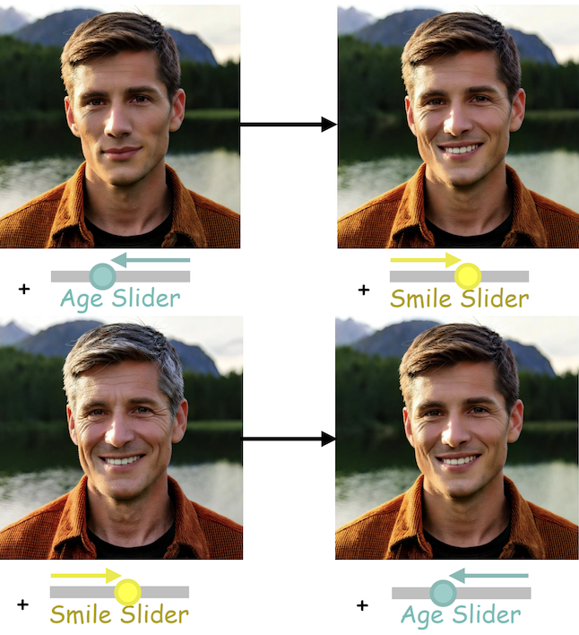

- Disentangled, simultaneous control of multiple image attributes in text-to-image generation
- Novel disentanglement and structure losses for precise control while preserving image consistency
- Extends fine-grained control to video generation